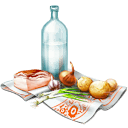

在地小農
在台灣，有這麼一群默默耕耘用心栽培的小農們。將平凡的種物，灌溉成不平凡的榖糧。 Oak堅持產地直送，將最新鮮的原食材與你一起分享。
分享快樂
在忙碌的都市叢林中穿梭，多久沒微笑了？上一次與朋友約會是什麼時候？ 親愛的，多留點時間給自己，感受去愛及被愛。
等待的地方
一個深耕的在地小農餐館， 無論晴雨都在你熟悉的地方等待。
簡單慵懶
夜晚時刻，是上班族下了班後，是媽媽收拾完家務後，是學生考完期中末後。 很想慵懶，來點簡單。子時開始，Oak將提供微醺、屬於你的小確幸。
Welcome to Oak
曾幾何時，食安問題被人們熱議著。隨著健康意識水漲船高， 台灣人使用保健食品的種類及頻率居高不下;但對於原食材的了解及食用卻寥寥無幾。其實，台灣有一群默默用心耕種的小農們， 培養出在地的好食材。看似平凡的種物，背後都有著不凡的付出。
Oak親自走訪田園，與小農們合作產地直送， 透過米其林三星主廚的精細廚藝，邀請你們一起分享。
OPEN HOUR
11:00AM~02:00AM
HAPPY HOUR
11:00AM~02:00AM
LUNCH SPECIALS
11:00AM~14:00AM
讓幸福持續發生
是啊！是真愛讓幸福持續發生。誰都沒錯，都認真愛過。 短短的人生中卻有多種緣份，不經意的、擦肩輕掠過的、刻骨銘心的， 還有最令人獨自心傷的渾然不知。
然而，有朝一日時間會帶走一切， 也會帶來一切。看看身邊，是否有個平凡庸碌的肩膀或是素顏黑框鏡的面容。 是否還是一個人，等著再聽一次那人說你愛我？
不管你是否單身，Oak永遠在這裡等待你的來臨。用心的料理，不同的故事， 讓單身的你不孤獨，擁有幸福的人渲染幸福。誰都沒錯，都認真愛過， 跟著Oak讓幸福持續發生。
專屬你的幸福饗宴